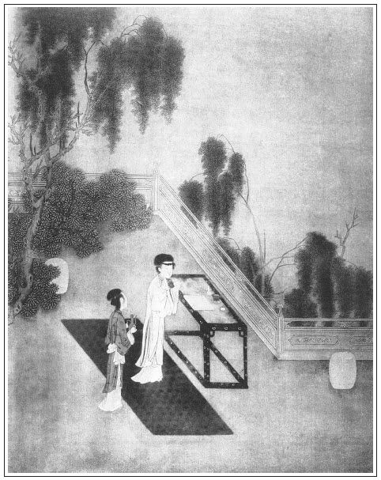

張回至此回，方寫金蓮、敬濟二人得手，而得手卻在卷棚內，且驚散之後，又用西門摸著。總寫西門之疏略，而又描金蓮之驚魂也。
月娘求子，蓋正對「掃雪」一回也。夫雪夜求子，明是怨憤，而借求子作勾挑之討，所以牢籠其夫。此回求子，方是真正求子也。然總與西門無相關涉，寫盡繼室之假，而觀後「撒潑」一回，則求子又明是挾制之媒。
寫孝哥來歷，卻詳細如此。一者見名分之正，不似瓶兒；二者欲為幻化地，不得不為薛姑子藥地。
掃雪烹茶，由寒而漸暖也。因雪結胎，由熱而歸於冷也。且雪胎能無幻化乎？
孝哥胎而官哥病，結果之人出，而冤孽之人該算帳矣。又官哥，子虛轉世也。孝哥，西門轉世也。本性一回頭，冤孽已不住。然則暗中棒喝，明明示人，又此書之本意也。
寫王姑子唸經者，又為月娘、薛姑子一映，見月娘誤於雪而空，瓶兒迷於色而忘也。
詞曰：
小院閒階玉砌，牆隈半簇蘭芽。一庭萱草石榴花，多子宜男愛插。
休使風吹雨打，老天好為藏遮。莫教變作杜鵑花，粉褪紅銷香罷。張旁直出幻化。
──右調《應長天》

話說陳敬濟與金蓮不曾得手，悵怏不題。單表西門慶赴黃、安二主事之席。乘著馬，跟隨著書僮、玳安四五人，來到劉太監莊上。早有承局報知，黃、安二主事忙整衣冠，出來迎接。那劉太監是地主，也同來相迎。西門慶下了馬，劉太監一手挽了西門慶，笑道：「咱三個等候的好半日了，老丈卻才到來。」西門慶答道：「蒙兩位老先生見招，本該早來，實為家下有些小事，反勞老公公久待，望乞恕罪。」三個大打恭，進儀門來。讓到廳上，西門慶先與黃主事作揖，次與安主事、劉太監都作了揖，四人分賓主而坐。第一位讓西門慶坐了，第二就該劉太監坐。劉太監再四不肯，道：「咱忝是房主，還該兩位老先生，是遠客。」安主事道：「定是老先兒。」西門慶道：「若是序齒，還該劉公公。」劉大監推卻不過，向黃、安兩主事道：「斗膽佔了。」便坐了第二位。黃、安二主事坐了主席。一班小優兒上來磕了頭，左右獻過茶，當值的就遞上酒來。黃、安二主事起身安席坐下。小優兒拿檀板、琵琶、絃索、簫管上來，合定腔調，細細唱了一套《宜春令》「青陽候煙雨淋」。張旁又為孝哥結胎。唱畢，張夾為瓶兒病也。劉太監舉杯勸眾官飲酒。安主事道：「這一套曲兒，做的清麗無比，定是一個絕代才子。況唱的聲音嘹亮，響遏行雲，卻不是個雙絕了麼！」西門慶道：「那個也不當奇，今日有黃、安二位做了賢主，劉公公做了地主，這才是難得哩！」黃主事笑道：「也不為奇。劉公公是出入紫禁，日覲龍顏，可不是貴臣？西門老丈，堆金積玉，彷彿陶朱，可不是富人？富貴雙美，這才是奇哩！」繡眉贊處妙在帶三分笑罵意。四個人哈哈大笑。當值的斟上酒來，又飲了一回。小優兒又拿碧玉洞簫，吹得悠悠咽咽，和著板眼，唱一套《沽美酒》「桃花溪，楊柳腰」的時曲。張旁又照管敬濟、金蓮。唱畢，眾客又讚了一番，歡樂飲酒不題。
且說陳敬濟因與金蓮不曾得手，耐不住滿身慾火。見西門慶吃酒到晚還未來家，依舊閃入卷棚後面，探頭探腦張看。張旁受苗青贓在此。原來金蓮被敬濟鬼混了一場，也十分難熬，正在無人處手托香腮，沉吟思想。不料敬濟三不知走來，黑影子裡看見了，恨不的一碗水咽將下去。就大著膽，悄悄走到背後，將金蓮雙手抱住，便親了個嘴，說道：「我前世的娘！起先吃孟三兒那冤兒打開了，幾乎把我急殺了。」金蓮不提防，吃了一嚇。回頭看見是敬濟，心中又驚又喜，便罵道：繡眉驚喜便罵，因知婦人罵人，必定驚而喜矣。「賊短命，閃了我一閃，快放手，有人來撞見怎了！」敬濟那裡肯放，便用手去解他褲帶。金蓮猶半推半就，早被敬濟一扯扯斷了。金蓮故意失驚道：「怪賊囚，好大膽！就這等容容易易要奈何小丈母！」繡旁猶立名分，妙。張旁然則如何，不容易又如何？敬濟再三央求道：張旁為奈何哉！「我那前世的親娘，要敬濟的心肝煮湯吃，我也肯割出來。沒奈何，只要今番成就成就。」敬濟口裡說著，腰下那話已是硬幫幫的露出來，朝著金蓮單裙只顧亂插。金蓮桃頰紅潮，情動久了。初還假做不肯，繡眉寫佯推故就，字字銷魂。及被敬濟累垂敖曹觸著，就禁不的把手去摸。繡旁真情露矣。敬濟便趁勢一手掀開金蓮裙子，盡力往內一插，不覺沒頭露腦。原來金蓮被纏了一回，臊水濕漉漉的，因此不費力送進了。兩個緊傍在紅欄幹上，任意抽送，敬濟還嫌不得到根，教金蓮倒在地下：「待我奉承你一個不亦樂乎！」金蓮恐散了頭髮，又怕人來，繡眉敬濟一味急，金蓮雖急又急不得，更苦。推道：「今番且將就些，後次再得相聚，憑你便了。」繡旁自開後約。一個「達達」連聲，一個「親親」不住，廝並了半個時辰。只聽得隔牆外籟籟的響，又有人說話，兩個一哄而散。
敬濟雲情未已，金蓮雨意方濃。卻是書僮、玳安拿著冠帶拜匣，都醉醺醺的嚷進門來。月娘聽見，知道是西門慶來家，忙差小玉出來看。書僮、玳安道：「爹隨後就到了。我兩人怕晚了，先來了。」不多時，西門慶下馬進門，已醉了，直奔到月娘房裡來。摟住月娘就待上床。月娘因要他明日進房，應二十三壬子日服藥行事，便不留他，道：「今日我身子不好，你往別房裡去罷。」西門慶笑道：「我知道你嫌我醉了，不留我。也罷，別要惹你嫌。我去了，明晚來罷。」繡旁連絡得妙。月娘笑道：「我真有些不好，月經還未淨。張旁結胎分明。誰嫌你？明晚來罷。」西門慶就往潘金蓮房裡去了。金蓮正與敬濟不盡興回房，眠在炕上，一見西門慶進來，忙起來笑迎道：「今日吃酒，這咱時才來家。」西門慶也不答應，一手摟將過來，連親了幾個嘴，一手就下邊一摸，摸著他牝戶，張旁險又不啻上文瓶兒看蝶二十分矣。道：「怪小淫婦兒，你想著誰來？兀那話濕搭搭的。」繡眉暖昧處偏識破，卻又當面瞞過，為得奇險驚人。金蓮自覺心虛，也不做聲。繡旁做一聲便不妙。只笑推開了西門慶，向後邊澡牝去了。張夾能使敬濟文字在西門處結，是大奇大奇。當晚與西門慶雲情雨意，不消說得。
且表吳月娘次日起身，正是二十三壬子日，梳洗畢，就教小玉擺著香桌，上邊放著寶爐，燒起名香，又放上《白衣觀音經》一卷。月娘向西皈依禮拜，拈香畢，將經展開，念一遍，拜一拜，念了二十四遍，拜了二十四拜，圓滿。然後箱內取出丸藥放在桌上，又拜了四拜，禱告道：「我吳氏上靠皇天，下賴薛師父、王師父這藥，繡眉以二尼並大祝贊，妙刺。仰祈保佑，早生子嗣。」告畢，小玉燙的熱酒，傾在盞內。月娘接過酒盞，一手取藥調勻，西向跪倒，先將丸藥嚥下，又取末藥也服了，喉嚨內微覺有些腥氣。繡旁映出胎衣。月娘迸著氣一口呷下，繡旁愚人之苦。張夾孝哥如此得來。又拜了四拜。當日不出房，只在房裡坐的。
西門慶在潘金蓮房中起身，就叫書僮寫謝宴貼，往黃、安二主事家謝宴。書僮去了，就是應伯爵來到。西門慶出來，應伯爵作了揖，說道：「哥，昨在劉太監家吃酒，幾時來家？」西門慶道：「承兩公十分相愛，灌了好幾杯酒，歸路又遠，更餘來家。已是醉了，這咱才起身。」玳安捧出早飯，西門慶正和伯爵同吃，又報黃主事、安主事來拜。西門慶整衣冠，教收過家活出迎。應伯爵忙迴避了。黃、安二主事一齊下轎。進門廝見畢，三人坐下，一面捧出茶來吃了。黃、安二主事道：「夜來有褻。」西門慶道：「多感厚情，正要叩謝兩位老先生，如何反勞台駕先施！」安主事道：「昨晚老先生還未盡興，為何就別了？」西門慶道：「晚生已大醉了。臨起身，又被劉公公灌上十數杯葡萄酒，在馬上就要嘔，耐得到家，睡到今日還有些不醒哩。」笑了一番，又吃過三杯茶，說些閒話，作別去了。應伯爵也推事故家去。西門慶回進後邊吃了飯，就坐轎答拜黃、安二主事去。又寫兩個紅禮帖，吩咐玳安備辦兩副下程，趕到他家面送。當日無話。
西門慶來家，吳月娘打點床帳，等候進房。西門慶進了房，月娘就教小玉整設餚饌，燙酒上來，兩人促膝而坐。西門慶道：「我昨夜有了杯酒，你便不肯留我，又假推甚麼身子不好，這咱搗鬼！」月娘道，「這不是搗鬼，果然有些不好。難道夫妻之間恁地疑心？」西門慶吃了十數杯酒，又吃了些鮮魚鴨臘，便不吃了，月娘交收過了。小玉熏的被窩香噴噴的，兩個洗澡已畢，脫衣上床。枕上綢繆，被中繾綣，言不可盡。這也是吳月娘該有喜事，恰遇月經轉，兩下似水如魚，便得了子了。繡眉月娘得子，寫得與藥毫不相干，春秋妙筆。張夾孝哥如此結胎。正是：
花有並頭蓮並蒂，帶宜同挽結同心。
次日，西門慶起身梳洗，月娘備有羊羔美酒、雞子腰子補腎之物，與他吃了，打發進衙門去。西門慶衙門散了回來，就進李瓶兒房看哥兒。張夾按寫官哥幻化者出，孽自難存。李瓶兒抱著孩子向西門慶道：「前日我有些心願未曾了。這兩日身子有些不好，坐淨桶時，常有些血水淋得慌。早晚要酬酬心願，張旁孽機發，動悔念矣。你又忙碌碌的，不得個閒空。」西門慶道：「你既要了願時，我叫玳安去接王姑子來，繡眉西門慶平時最鄙薄姑子，今日忽曰「接來」，所謂愚人易惑也。與他商量，做些好事就是了。」便叫玳安，吩咐接王姑子。玳安應諾去了。
書僮又報：「常二叔和應二爹來到。」張夾已為借銀伏線。西門慶便出迎廝見。應伯爵道：「前日謝子純在這裡吃酒，我說的黃四、李三的那事，哥應付了他罷。」西門慶道：「我那裡有銀子？」應伯爵道：「哥前日已是許下了，如何又變了卦？哥不要瞞我，等地財主，說個無銀出來？隨分湊些與他罷。」西門慶不答應他，只顧呆了臉看常峙節。繡眉財主只一不答應，便令求者無所施其喙。張夾寫心事，蓋西門慶尚不知局也。常峙節道：「連日不曾來，哥，小哥兒長養麼？」西門慶道：「生受注念，卻才你李家嫂子要酬心願，只得去請王姑子來家做些好事。」應伯爵道：「但凡人家富貴，專待子孫掌管。養得來時，須要十分保護。譬如種五穀的，初長時也得時時灌溉，才望個秋收。小哥兒萬金之軀，是個掌中珠，又比別的不同。小兒郎三歲有關，六歲有厄，九歲有煞，又有出痧出痘等症。哥，不是我口直，論起哥兒，自然該與他做些好事，廣種福田。若是嫂子有甚願心，正宜及早了當，管情交哥兒無災無害好養。」說話間，只見玳安來回話道：「王姑子不在庵裡，到王尚書府中去了。小的又到王尚書府中找尋他，半日才得出來。與他說了，便來了。」西門慶聽罷，依舊和伯爵、常峙節說話兒，一處坐地，書僮拿些茶來吃了。伯爵因開言道：「小弟蒙哥哥厚愛，一向因寒家房子窄隘，不敢簡褻，多有疏失。張旁因西門呆臉之故，便忽然相請，小人可畏。今日稟明了哥，若明後日得空，望哥同常二哥出門外花園裡頑耍一日，少盡兄弟孝順之心。」常峙節從旁讚道：「應二哥一片獻芹之心，哥自然鑒納，決沒有見卻的理。」西門慶道：「若論明日，到沒事，只不該生受。」伯爵道：「小弟在宅裡，筷子也不知吃了多少下去，繡旁似非謙詞。今日一杯水酒，當的甚麼。」西門慶道：「既如此，我便不往別處去了。」伯爵道：「只是還有一件──小優兒，小弟便叫了。但郊外去，必須得兩個唱的去，方有興趣。」西門慶道：「這不打緊，我叫人去叫了吳銀兒與韓金釧兒就是了。」伯爵道：「如此可知好哩。只是又要哥費心，不當。」西門慶一面就叫琴童，吩咐去叫吳銀兒、韓金釧兒，明日早往門外花園內唱。琴童應諾去了。
不多時，王姑子來到廳上，見西門慶道個問訊：「動問施主，今日見召，不知有何吩咐？老身因王尚書府中有些小事去了，不得便來，方才得脫身。」西門慶道：「因前日養官哥許下些願心，一向忙碌碌，未曾完得。托賴皇天保護，日漸長大。我第一來要酬報佛恩，第二來要消災延壽，張夾二要字寫盡愚人。因此請師父來商議。」王姑子道：「小哥兒萬金之軀，全憑佛力保護。老爹不知道，我們佛經上說，人中生有夜叉羅剎，常喜啖人，令人無子，傷胎奪命，皆是諸惡鬼所為。繡眉僧尼專拿神鬼嚇人，故易使人怕，怕則信，信則從矣。張夾又映官哥。如今小哥兒要做好事，定是看經念佛，其餘都不是路了。」西門慶便問做甚功德好，王姑子道：「先拜卷《藥師經》，待回向後，再印造兩部《陀羅經》，極有功德。」西門慶問道：「不知幾時起經？」王姑子道：「明日到是好日，張旁今日或者不及矣。就我庵中完願罷。」西門慶點著頭道：「依你，依你。」王姑子說畢，就往後邊，見吳月娘和六房姊妹都在李瓶兒房裡。王姑子各打了問訊。月娘便道：「今日央你做好事保護官哥，你幾時起經頭？」王姑子道：「來日黃道吉日，就我庵裡起經。」小玉拿茶來吃了。李瓶兒因對王姑子道：「師父，我還有句話，一發央及你。」王姑子道：「你老人家有甚話，但說不妨。」李瓶兒道：「自從有了孩子，身子便有些不好。明日疏意裡邊，帶通一句何如？行的去，我另謝你。」張夾愚。王姑子道：「這也何難。且待寫疏的時節，一發寫上就是了。」正是：
禍因惡積非無種，福自天來定有根。
文回文禹門云：金蓮與經濟，直至此回，方能到手，亦可謂難矣。天下本有極難之事，世上又多畏難之人，以畏難之人而做極難之事，人盡知其事之難成也。獨有男女之事，竟少畏難之，是何故乎？利與義相反，貪利必負義，利與害相連，得利每至受害。然亦有義中之利，無害之利，君子不辭焉。獨有男女苟合之事，不但不利與人，亦實不利於己，且斷無不悖義而不被害者。乃自古及今，無不趨之若鶩，甘之如飴者，果何故乎？我思其故，三晝夜而不可得。
凡所謂傾人家國，帶肉骷髏而殃及子孫，傷及性命，以至腰中仗劍，笑裡藏刀，是皆言其末而未探其本也。顧何以聖神仙佛而外，「色」之一字，雖善知識、大作用之人，亦不能免，果何故歟？大抵本人身內之水火無以遏抑之，其為患遂有不可勝言者：腎水氾濫而不可止，心火焚燒而不知滅，於是膽因色大，神為色迷，耳目為色昏瞶，言語因色顛倒，以及五官四體，五臟六腑，無不被色惑亂。是非先止其水，兼滅其火，不為功。水何以止？以淨土止之，靜則不動。火何以滅？以智水滅之，智者不惑。不動不惑，思過半矣。
上半回金蓮偷情，下半回月娘求子，全是自此事上生波，然而邪正分焉，此嫡庶之所由別也。偷婿者尚未暢其欲，求子者已如願相償。生門死戶，乃生死之一火關，亦孰能逃去此關乎？鄙薄敬濟、金蓮二人者，勿為二人所反唇，斯可已。